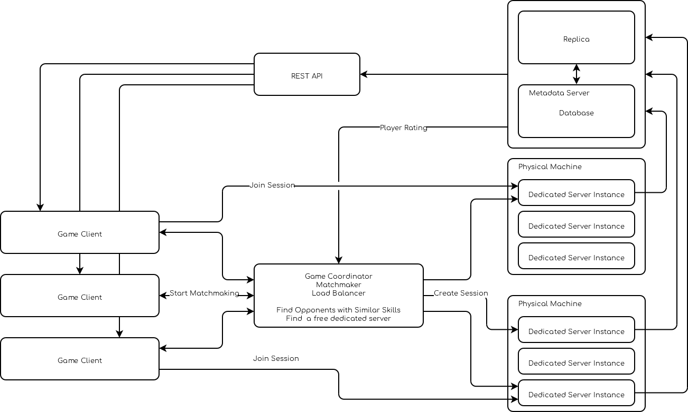
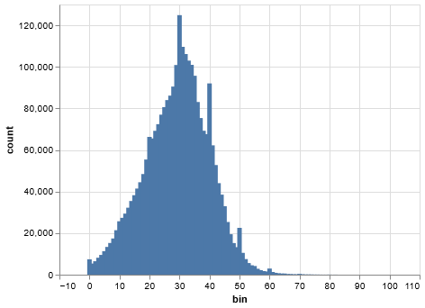

Competitive
Small number of players on a single instance (10-100)
Teams of players (2-10)
Game instance is short lived (20-60 minutes)
Players are grouped by skill to provide interesting matches (i.e no stomp)
Map/Level is small (all assets are loaded, no streaming)
Latency is critical (10-100ms) (< 50ms LAN, < 100 ms Ranked)
30 FPS is one frame every 30 ms
Avoid latency spikes at all cost
System Overview
Client start matchaming by sending a matchmaking request to the game coordinator
Game coordinator group players of similar skill into teams
Game coordinator find an empty server instance
Game coordinator create a session on the server instance
Game coordinator reply to clients with the only session to join
Client join the online session
Dedicated server update player stats
The game coordinator
Its goal is to group players with similar skill, to provide interesting games; To group players it needs first to estimate skill of each players using a rating system.
Its secondary goal is to load balance session on different instances. Typically servers will be able to handle multiple instance of a dedicated server, but spliting the load accross many servers will improve the experience (lower latency).
Ranking Systems
Goals:
Put players of similar skills together to create interesting matches
Avoid low quality match (stomps)
Initialization
Give new players a fixed amount of points
Simple, high skill player will need to grind/win a lot to move to their skill bracket (which might become boring too quickly). Low skill player will lose a lot which will be boring/annoying. You can tweak the ranking algorithm to make larger updates at the beginning.
Note
If new games have enough mechanic to learn the win/lose streak might not be too bad as people used those to learn how to play the game.
Do a binary search
Make new players take 10 calibration match
Starts at a medium Level
If loss try lower rank
If high try higher rank
Note
Binary search allow us to quickly find the rank a player is by jumping divisions without going through standard ranking updates, but the estimate is noisy so player can lose/win games due to external factors. We can reduce the binary search range to avoid jumping too far.
Regression model; if match data is available a regression model can be implemented to estimate the rank from match data
NetWorth * a + Damage * b + Death * c + Kills * d + Assist * e + Hero * f = Rank
Note
Regression models requires a fair amount of data before it can be implemented, as such it is not a valid approach for boostraping a new game.
Elo Systems
Note
This system is considered outdated
Updates
pi ~ N(ui, s ** 2) # Performance is normally distributed around their skill
Probbility of winning is:
P(p1 > p2 | u1, u2) = CDF((s1 - s2) / sqrt(2 * s))
On match result y (1, 0, -1) for win, draw, loss, score is updated as
K = alpha * s * sqrt(pi)
delta = K * ((y + 1) / 2 - CDF((s1 - s2) / sqrt(2 * s)))
s1 = s1 + y * delta
s2 = s2 - y * delta
where alpha is a weighting factor, which is often summerized as K
The normal distribution can be substituted by the logistic distribution which
has a easier cdf than the normal distribution.
For chess;
R(new) = R(old) = K * (W - We)
We = 1 / (1 + 10 ^ ((R - OR) / 400))
We = Q / (Q + QO)
Q = 10 ^ (R / 400)
QO = 10 ^ (RO / 400)
R: Rating
OR: Oponents Rating
C: 200
K: 32
W: Actual Result (1 for win, 0 for loss)
We: Expected result
K: 32
K is a constant that can be tweaked, it sets the maximum adjustmnent
per game i.e the rating can at most increase/decrease by K.
K is critical to the algorithm.
If too low the score will not adapt fast enough, if too high the score will
be too volatile.
You can use a layered approach where K gets smaller has the
rank increase, so high skill player will quickly climb the ladder
to the high skill stage.
Issues
- Inflation/Deflation: Elo has a fixed amount of points in its pool (win-loss) is a zero sum game so inflation/deflation should not happen
New players add new points in the Elo pool (inflation)
Old players retired and remove points from the Elo pool (deflation)
- Player can stop playing to protected their rating,
or cause them to create alternate accounts.
Glicko-2
The paper goes in great details how to implement such a ranking system.
Initialization
Starts with calibration matches (n=~10)
Unrated player starts with
# Starting values, Glicko-1 Scale r = 1500 rd = 350 s = 0.06 # Tweakable ## Glicko-2 Scale # Rating location mu = (r - 1500) / 173.7178 # Rating deviation phi = RD / 173.7178
TrueSkill Like
Baysian Generative Model for skill
Takes into account teams, so performance is function of the teammates permutation
Skill ~ N(mu, sigma) # Skill inside the game
# sigma models the consistency of the player
# To infer
Perf ~ N(s, Beta) # Performance for a specific match
# with Beta modeling the randomness inherent to the game
# Observed
Team ~ Sum(Perf for each Teammate) # Performance of the team
# Observed
Rank = (Team_i - Team_(i - 1)) # Rank
# Observed
Posterior distribution (assumed to be gaussian):
p(s | r, A) = P(r | s, A) P(s) / P(r | A)
r: Team rank from {1 ... k} (r == in case of draws)
A: Team assignment from {1 ... n}
k: Number of Teams
n: Number of Players
p(s) = prod({1 ... n}, N(s_i, mu_i, sigma_i ^ 2))
Player performance is
p_i ~ N(p_i; s_i, Beta^2)
Team performance is the sum of the players performance
t_j = sum(i in A_j, p_i)
Reorder teams in ascending order of rank
Probability of a game rank r
P(r | {t_1 ... t_k}) = P(t_r1 > t_r2 > ... > t_rk)
The training needs to be online (i.e realtime player skill update)
* Gaussian density filtering
* message-passing
* sum-product algorithm
* Expectation propagation
Concerns
Alternate accounts; as the score of player increase match becomes fair Some player will be actively looking for easier matches by creating alternative accounts to lower their rank.
Toxicity: It is not recommended to display the exact rating number as it can cause players to obsses too much on their rating. A discrete rank/division system provides an overall rating, which might help the players focus on getting out of their devision instead of focusing on +/- of their ratings. Note, that toxicity will still happen at the entrance of each division as players can feel like they need to win to stay in their division.
Behaviour score which decrease in function of teammate reports pair toxic players with each other.
Player can stop playing to protected their rating; The game can implement seasons which will reset the ranking every year.
Rank inflation/deflation; season system can alleviate the effect
Account buying; restrictions on the account that can enter ranked matchmaking will reduce the number of account sold
Restrictions
Force account verification through a phone number
Require a minimum play time before enabling ranked
Attack the account black market
Sell booster kits that allow players to play in lower/higher ranks for a limited number of games. Booster are cheaper than boosted accounts (which reduce the appeal of boosted accounts), reduces the amount of games ruined by account buyers. Additionally boosted players are known by the matchmaking server, it can balance teams to reduce the skill gap. Increase the K factor (or similar) to allow players to switch division if they do win. Players might pay for account boosting because they might feel stuck in Elo Hell While its existence is still debated, the booster kit could help them skip over it (if it does in fact exist), burst their bubble, they could also use the opportunity to learn. In fact boosted player will have a bad reputation from the get go it might help to reframe boosted player as students/apprentice and promote the community to be teachers.
Party queuing, friends queuing together have a greater skill than a simple sum of their solo skills.
Team Assignment
The game mode is in charge of the team assignment, teams need to be assigned to Pawn (for targeting) and PlayerControllers. PlayerController team assignment will drive all the logic. The team assignment needs to be on both the pawn & the controller for effect like Possession (i.e enemy player taking control of an ally unit.
Tha player controller factions cannot change during gameplay (but its attitude towards other faction could change) Pawns’ faction could change as part of regular gameplay interaction.
Assigned using
AGKTeamPlayerStartsimple method the player start is selected at random by theAGameMode; it extract the team from the player start and assign it to the pawn.Assigned by the matchmaker: optimal for balanced games, so teams skill can be as close as possible